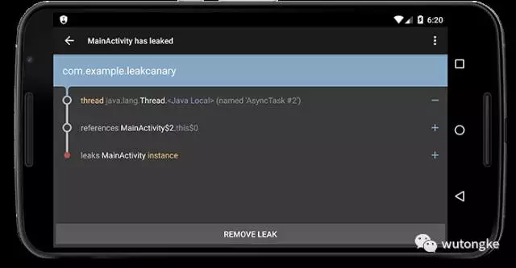
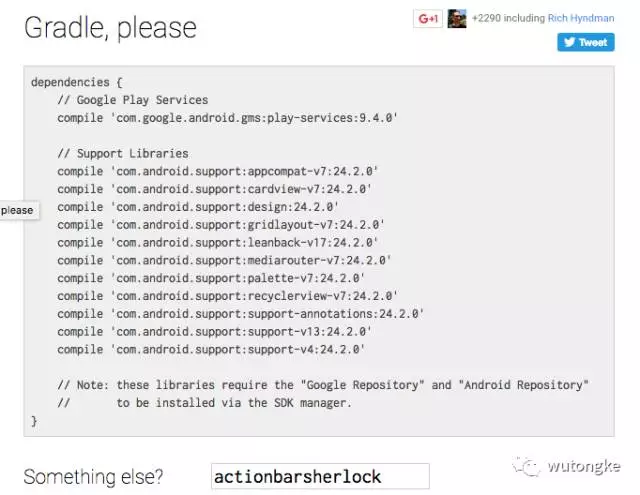

前言
这篇文章介绍开发者如何学习提高以构建更好的app，我将分享一些自己受益过的教程和资料。
一. 使用Android studio的快捷键
(1) tips
这里是一个使用Android studio的小建议集合，大家可以在里边找到不少提高效率的点子。
(2) template
使用Live templates可以节省coding时间：使用缩写快速输入方法或者循环
eg: 输入 fbc 则快速速入了findViewById
- template入门：Android Studio Live Templates
- 值得试用的live template 集合：keyboardsurfer/idea-live-templates
- 自定义template，这里是Reto Meier写的一篇非常好的教程Writing More Code by Writing Less Code with Android Studio Live Templates，当然也可以从IntelliJ IDEA documentation获取更多细节。
二. Debugging App时用到的工具
Library methods count Android 的 library非常有用，但是太多的库也会是的app中方法数目快速增加，这个工具可以显示各个依赖库的方法数。

Stetho 使用Stetho，可以非常方便地监控app，尤其是网络流量。还可以监测并编辑SQLite，和Shared Preferences。

LeakCanary Android和java工程中可以的内存泄露监测工具。
 Gradle, Please Chris broadFoot做的一个非常酷的一个library，只需要输入一个Library 的名字，就可以得到这个Library 的gradle依赖code，并且是该Library的最新版本，不要错过这个网站：
 Android Arsenal 这是一个分类查看Android Library、工具、工程的网站，很赞！
Android Tool Mac上的Android工具，可以进行录屏、截屏、安装apk，记录bug。
Butterknife Zelezny，可以根据选择的xml文件自动生成butterknife的注入代码。
ADB Idea Android和Intellij IDEA中可用的插件，卸载App、killApp、启动App、重启App、清除App数据、清除App数据并重启。
Another Adb tool 另一个可用adb工具。
Google Developers India , Android Developers 获取最新的Android信息
Android Dev weekly 订阅最新的Android资讯。
三. 向其它开发者学习
从开源代码中，我们可以学习到不少技巧。
Google I/O Google I/O是谷歌每年举行的为期两天的开发者大会，会上会展示数百个程序示例。这个工程是会议上的应用程序。应用支持Android 4.0以及更高版本的设备，并针对各种形状和尺寸手机和平板进行优化。
Android App MVP Architecture 这个工程提供了一个比较详细的MVP框架的demo，并且使用了Dagger2、GreenDao、Rxjava、FastAndroidNetworking、PlaceHolderView、AndroidDebugDatabase。
Google Android Architecture Blueprints 在构建应用程序时，我们可能会碰到各种各样的问题，使得我们在测试、维护、扩展应用程序时比较困难。Google Android Architecture Blueprints提供了避免这些常见问题的演示程序，这个项目使用不同的架构和和工具实现了相同的app。
Plaid 提供了设计资讯和灵感，非常好的实践了material design。
Kickstarter kickstarter是一个全球性的社区，把创造力融入生活中，探索艺术、设计、电影、游戏、音乐等等相关的项目，并且可以把这些项目加入到收藏夹。
四. 其它
- 开源协议介绍：Developer’s Guide to Open Source Licenses
- 测试入门：Testing Guide
Android 优化实践：Best Practices for Performance | Android Developers
依赖注入：
Dagger 2 Dependency Injection for Android Developers
Introduction to Dagger 2, Using Dependency Injection in Android: Part 1
Fragmented Podcast:Donn Felker 和 Kaushik Gopal在这里介绍Android开发者如何进阶，构建更好的软件。
Playbook for Developers：